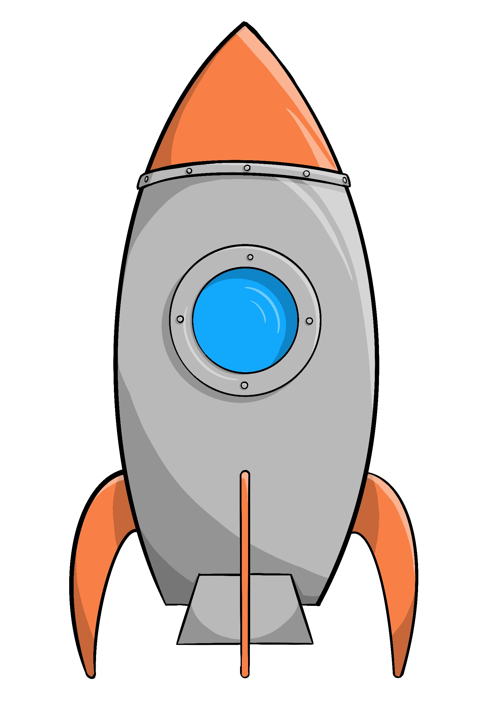

Yay!
Dejligt at være hjemme igen.
Har du nogensinde tænkt over hvor mange mennesker der er på Jorden?
Prøv at trykke på Jorden for at finde ud af det.
Jorden
Jorden er den tredje planet fra solen i vores solsystem! Det er den eneste planet hvor der er beboelse!
Pssst....
Det er her du befinder dig.